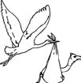

\1\2ğaç\3
Develer nereden gelir?

Kuzey Amerika’dan.
Afrika ve Arap çöllerinin simgeleri Amerika kökenlidir.
Atlar ve köpekler gibi, develer de 20 milyon yıl önce Amerika’nın otlaklarında evrilmiştir. Bu hayvanlar o zamanlar, bildiğimiz ve sevdiğimiz haliyle hörgüçlü yük hayvanları olmaktan ziyade, daha çok zürafaya ya da ceylana benziyordu. Bering kara köprüsünden Asya’ya 4 milyon yıl önce geçmişlerdir.
Son buzul çağında Kuzey Amerika’da soyları tükenmiştir ve atlardan ve köpeklerden farklı olarak geri dönmemişlerdir.
Kuzey Amerika’daki deve türünün neden yok olduğu belirsizdir. Görünürdeki suçlu, iklim değişikliğidir. Daha spesifik olarak bakacak olursak, bu yokoluş, çimlerde bulunan silis miktarındaki bir değişimden kaynaklanmış olabilir. Kuzey Amerika’daki iklim soğuyup kuraklaştıkça, çimlerdeki silis seviyesi üç katına çıktı. Bu son derece sert yeni çimler, en uzun dişli otlayıcıların dişlerini bile mahvetti; atlar ve develer çiğneyemedikleri için yavaş yavaş açlıktan öldüler.
Diğer bir ihtimal de şu: Asya’ya kaçış yolları, Bering kara köprüsünün 10.000 yıl önce yok olmasıyla ortadan kalkan bu zayıflamış türler, insan avcılar tarafından tamamen “yok edildi.”